Pésentation de l'application


Cet application vous permet d'avoir un "Rich Presence" sur l'application Discord et d'afficher ce que vous jouez sur votre PlayStation. Ces séléctions sont manuelles.

Ci-contre, un exemple de status disponible sur l'application.
Voici les outils disponibles sur l'application :
- PlayStation RPC - Pour les status PlayStation
- Custom Presence - Pour faire un RPC personnalisé
- Système de signalement de bug (blacklist si spam)
Ce software se met à jour automatiquement au lancement de l'application via le raccourcis créé sur le bureau.
ATTENTION : pour le bon fonctionnement de l'application, merci de laisser les fichiers sources dans leur dossier situé dans le AppData. Si jamais il vous venait à l'idée de supprimer le raccourcis sur le bureau, il est important de lancer "PlayStationRPC_Launcher.exe" pour mettre l'application à jour.
Installation
Prérequis
- Le framework Microsoft .NET Framework 8.
- Le setup de l'application à télécharger en cliquant sur le bouton en haut à droite ou en cliquant ici.
- L'application de bureau Discord. (bien évidemment)
NOTE : il est important pour faire tourner l'application que le framework Microsoft .NET Framework 8 soit bien installé sur votre ordinateur !
Installer
Uns fois tous les prérequis installés, lancez le setup d'installation du software. Acceptez la license et les conditions d'utilisation pour pouvoir installer.
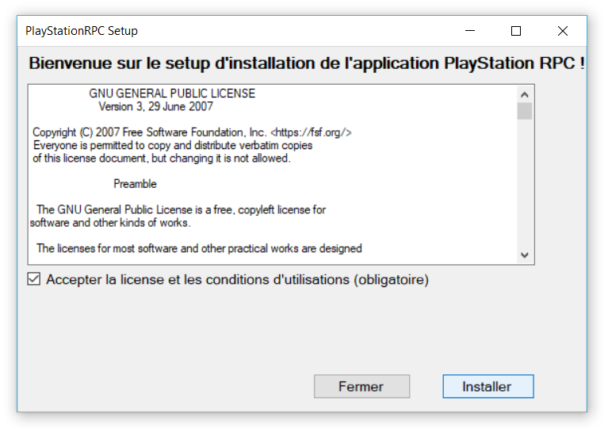Une fois l'application bien installée, un icon apparaîtra sur votre bureau. Vous pouvez maintenant la lancer !
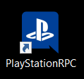Fonctionnalités
La principale fonction de l'application est le Rich Presence pour la PlayStation avec des status des jeux, mais il y à aussi un Custom Presence pour faire vos propres RPC personnalisés !
NOTE : un seul outils peut fonctionner à la fois. Si le PlayStation RPC est connecté et que vous lancer le RPC Personnalisé, la piorité passera automatiquement sur le RPC Personnalisé. Et si vous le fermer, le status repassera sur le PlayStationRPC !
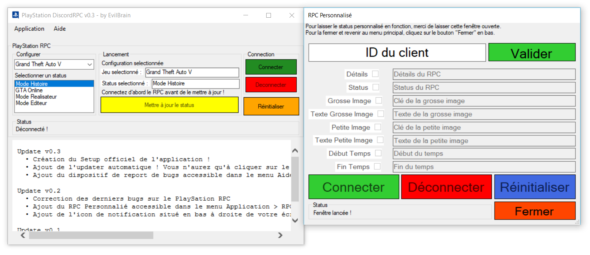Si vous trouvez un bug, nous vous invitons à le signaler sur le panel prévu accessible dans l'onglet "Aide" > "Signaler un bug". Merci d'indiquer des infos valides pour un meilleur traitement du signalement ! (vos infomations ne seront pas divulguées)
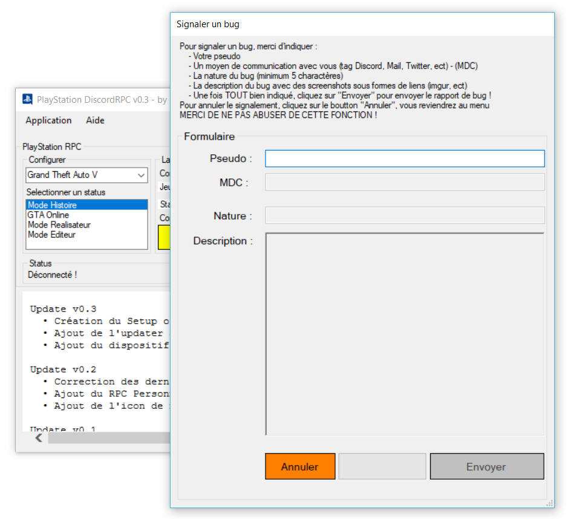ATTENTION : si vous abusez de cette fonction, votre ordinateur sera ajouté à la blacklist. Si vous êtes ajouté à la blacklist, vous ne pourrez plus lancer l'application. Pour se faire enlever de la blacklist, vous pourrez ouvrir un ticket sur le serveur de support ou sur GitHub en rédigeant un texte et en indiquant le nom de votre ordinateur !
Pour une meilleure et plus rapide utilisation du PlayStationRPC, un icon dans la barre de notifications en bas à droite avec les fonctions "Connecter", "Déconnecter" et "Quitter" pour quitter l'application.
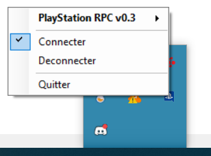Utilisation
Pour commencer utiliser l'application, ouvrez-la depuis le raccourcis sur le bureau ou avec le "PlayStationRPC_Launcher.exe" (si jamais l'icon est supprimé) pour mettre à jour automatiquement l'application qui se lancera quelques secondes après. Assurez vous que l'application Discord ou Discord Canary est bien lancée.
Utiliser :
PlayStation RPC
Pour utiliser le PlayStation RPC, suivez les instructions ci-dessous :
- Cliquez sur le bouton "Connecter" pour connecter le RPC
- Choisissez votre jeu dans la partie "Configuration" puis choisissez le status de votre choix lié au jeu
- Cliquez sur le bouton "Mettre à jour le status" pour confirmer la configuration et mettre à jour le RPC
- Profitez :)
Vous pouvez changer la configuration à tout moment, cliquez sur "Mettre à jour le status" pour confirmer vos changements et remettre à jour le status.
Si vous voulez réinitialiser la configuration, cliquez sur "Réinitialiser". Ce action n'arretera pas votre RPC !
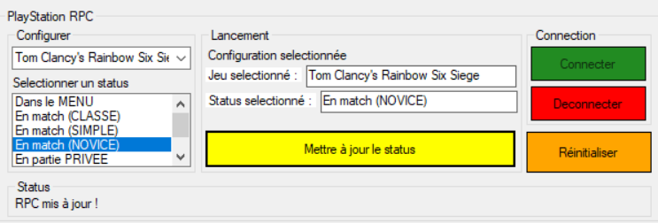Custom Presence (RPC Personnalisé)
Pour utiliser le RPC Personnalisé, suivez les instructions ci-dessous :
Rendez vous sur le portail des developpeurs de Discord, puis créez une nouvelle application avec le nom de votre choix qui sera aussi celui du status.
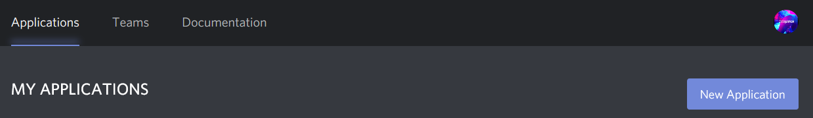 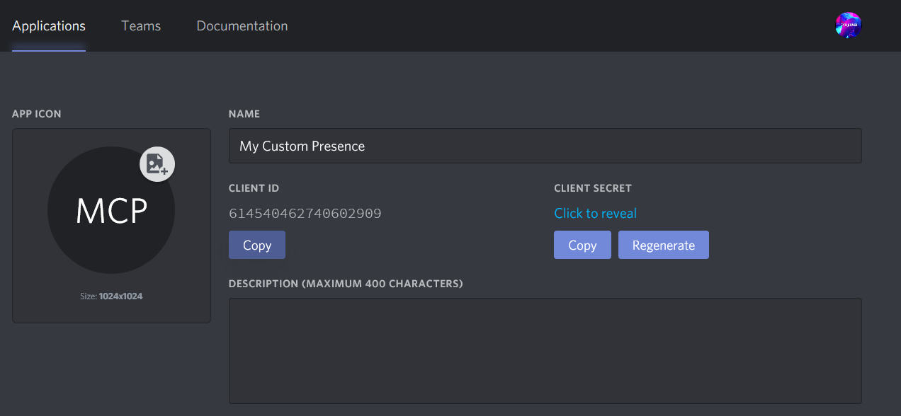Ajoutez une image si vous le voulez puis copiez l'ID de l'application que vous venez de créer puis collez le dans le RPC Personnalisé et cliquez sur "Valider".
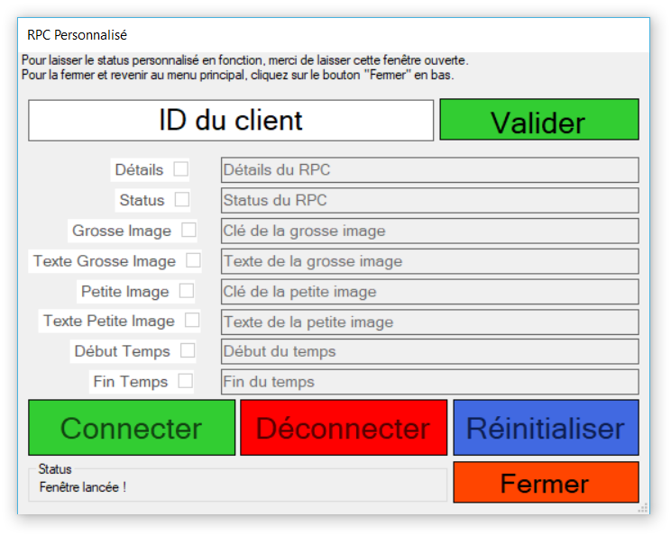Retrournez sur le portail des developpeurs de Discord et rendez vous dans l'onglet "Rich Presence" puis "Art Assets" et importez une cover image et des assets.
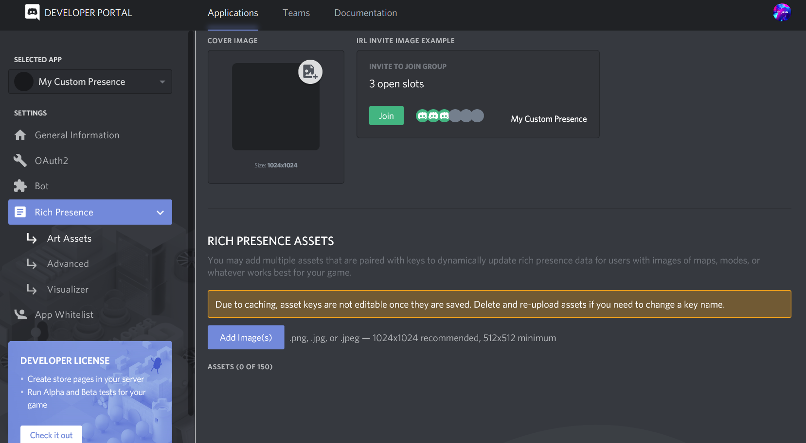Pour configurer l'application, aidez vous de la documentation Discord sur les Rich Presence. Cochez les options que vous voulez.
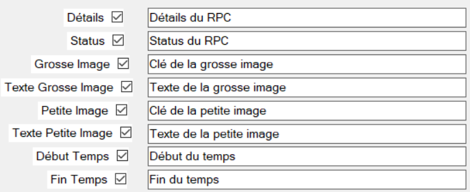 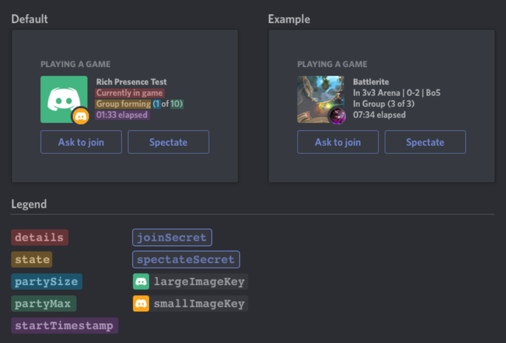Une fois la configuration terminée, utilisez les bouttons de commande :
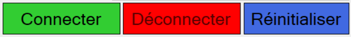Pour fermer le RPC Personnalisé, cliquez sur "Fermer".
Panel de signalement de bug
Pour signaler un bug, vous pouvez directement le faire via le panel situé dans l'onglet "Aide" > "Signaler un bug" puis remplissez le formulaire.
Par exemple :
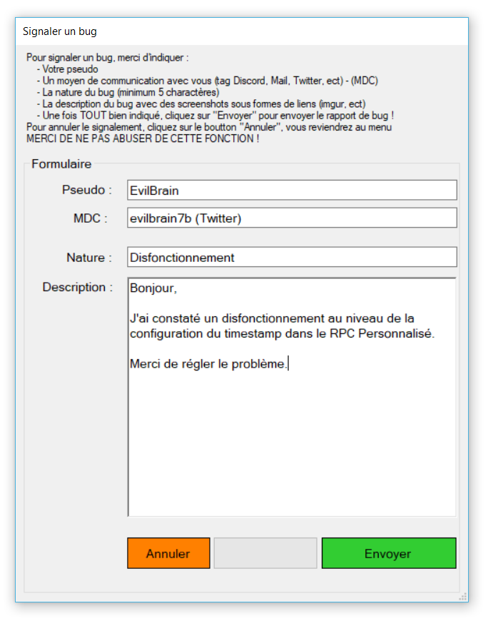